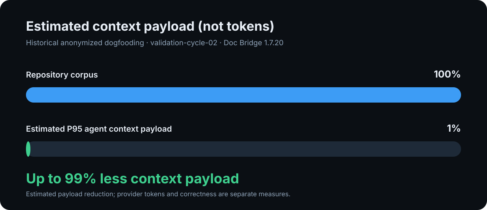
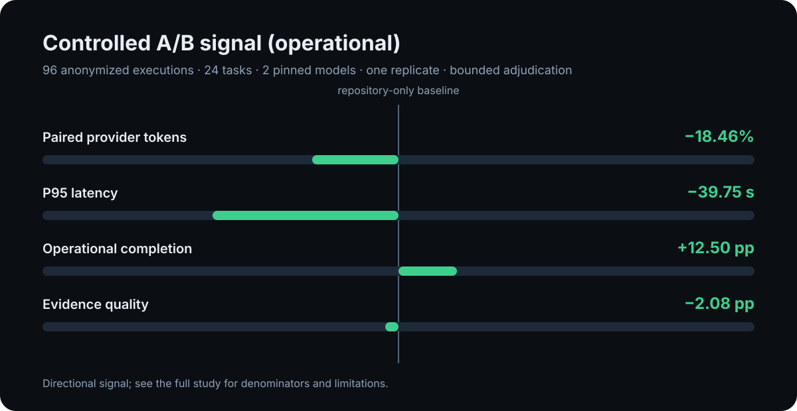

Turn repo docs into executable handoffs.
doc-bridge gives every coding agent the same contract: startHere, editRoots, checks, and humanDoc. Then it turns agent memory back into reviewable documentation drafts. Use it from CLI, MCP, and CI. No LLM or API key required.

Measured context efficiency
Anonymized dogfooding estimated up to 99% less context payload between the scanned repository corpus and the P95 agent payload. This is not a provider-token measurement.

Doc Bridge 1.7.20 · estimated payload reduction, not a guaranteed token reduction or correctness result.
Controlled A/B signal
Across 96 anonymized executions, the deterministic workflow showed fewer paired provider tokens, lower P95 latency, and higher operational completion. This does not establish semantic correctness.

Find the gap between docs and reality.
Doc Bridge compares declared documentation and ownership with the observed project graph, then keeps every finding tied to evidence and a reviewable action.
What the deterministic audit can show
| Coverage | Missing package or ownership documentation |
| Freshness | Stale declared relations and generated-document boundaries |
| Quality | Titles, examples, required sections, metadata, and exact duplicates |
| Limits | Natural-language correctness and semantic redundancy remain review work |
Use it where agents already work
One index, multiple surfaces. Start with the CLI; wire MCP and CI when the first handoff is useful.

| Surface | What it does | How you use it |
|---|---|---|
| CLI | Query ownership, inspect handoffs, run doctor, search docs. | ak-docs query package auth --agent |
| MCP | Lets Cursor, Claude Code, and Codex-style agents resolve before editing. | ak-docs mcp install --cursor |
| CI | Blocks stale indexes and broken human-doc bridges. | ak-docs index && ak-docs gate run |
| Adapters | Connect Fumadocs, Docusaurus, VitePress, Starlight, Nextra, plain markdown, and pnpm workspaces. | fumadocs · docusaurus · vitepress · starlight · nextra · plain-markdown |
| Memory pipeline | Classifies local agent memory and drafts documentation updates. | ak-docs memory promote --pr |
| Optional RAG/chat | Adds handoff-first chat when you install AgentsKit peers. | ak-docs rag ingest && ak-docs chat |
Four loops, one bridge
Act, bridge, learn, explain — each loop has a CLI command and real output, not a concept table.

Handoff routing
query --agent · MCP handoff.resolve
Human ↔ agent
bootstrap agent-docs · bridge.humanDoc
Agent memory → docs
memory classify · promote --pr
Local consult
ask · optional provider-backed review
Public dogfood surfaces
Open AgentsKit surfaces used for validation — not independent customer or private-monorepo claims.


Help make repository knowledge verifiable.
Reproduce the anonymized study, add an analyzer, contribute a documentation rule, or create a fixture for a stale relation or structured contradiction.
Reproduce the study ContributeCI on every PR
Stale handoffs fail the build — same gate locally and in GitHub Actions.